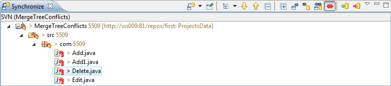

|
|
|
Since 1.6 version SVN recognizes a new kind of conflict, known as a "tree conflict". Such conflicts manifest at the level of directory structure, rather than file content.
Situations now flagged as conflicts include deletions of locally modified files, and incoming edits to locally deleted files.
There are many different situations that can result in a tree conflict, and all of them require different steps to resolve the conflict.
Files and directories which are victims of a tree conflict cannot be committed before the conflict is marked resolved.
Note that Subversion is still treating renames as a "copy+delete" operation, so file renames causing tree conflicts can only be detected in terms of file additions and deletions. Because of this, false positives during tree conflict detection are possible.
To facilitate tree conflict detection, attempting to commit the deletion of a file which has already been deleted in the HEAD revision now causes an error. In Subversion 1.5, this was treated as a no-op, potentially resulting in "empty" revisions which contained no changes.
Subversive detects tree conflicts during update/switch/merge operations and provides additional information about the conflict with the ability to edit it. This is how resources which have tree conflicts look like in Synchronize view:

Resources with tree conflicts have the same decoration as the resources with conflicts at the level of file content.
You can edit tree conflicts by right-clicking conflicted resource and calling 'Edit Tree Conflicts' action.
This is how 'Edit Tree Conflict' dialog looks like:
'Edit Tree Conflict' dialog shows conflict information and provides ability to resolve the conflict. For some cases user will need to traverse history for the resource, e.g. if resource was renamed or moved, and there are links which allows to do it. Conflict Info area includes following: operation, local status, incoming action, start version and end version.
Conflict Resolution area have following options: